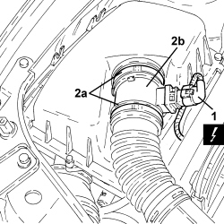
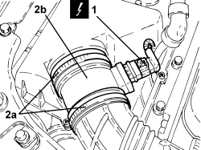

1060G10 AIR FLOW METER - R.R.
- Path
- Procedures > 10 ENGINE > 1060 DIESEL INJECTION SYSTEM > 1060G DIESEL INJECTION PRESSURE PUMP ELECTRONIC CONTROL > 1060G10 AIR FLOW METER - R.R.
- Kind
- repair procedure (removal / refitting; the operation number is the code)
- Applies to
- engines: 1.9 JTD 8v, 1.9 JTD 16v, 2.4 JTD 20v; all production periods
- Interactive page
- https://sloeber94.github.io/elrnDB-fCrm/en/#/194000332
Applies to: engines: 1.9 JTD 8v, 1.9 JTD 16v; all production periods
 Removing
Removing
 Refitting
Refitting- Make sure that the ignition key is in the OFF position, then disconnect the battery terminal (-).
Description | Connector | |
|---|---|---|
- | Battery |
1. Disconnect the electrical connection from the air flow meter.
Description | Connector | |
|---|---|---|
1 | Air flow meter |
2. Loosen the bands (2a) and remove the air flow meter (2b).

Applies to: engines: 1.9 JTD 8v, 1.9 JTD 16v; all production periods
Refitting
Removing- Place the air flow meter back in its housing and secure it using the bands.
- Connect the electrical connection to the air flow meter.
- Connect the negative battery terminal.
Applies to: engines: 2.4 JTD 20v; all production periods
Removing
Refitting- Make sure that the ignition key is in the OFF position, then disconnect the battery terminal (-).
1. Disconnect the electrical connection from the air flow meter.
Description | Connector | |
|---|---|---|
1 | Air flow meter |
2. Loosen the bands (2a) and remove the air flow meter (2b).

Applies to: engines: 2.4 JTD 20v; all production periods
Refitting
Removing- Place the air flow meter back in its housing and secure it using the bands.
- Connect the electrical connection to the air flow meter.
- Connect the negative battery terminal.